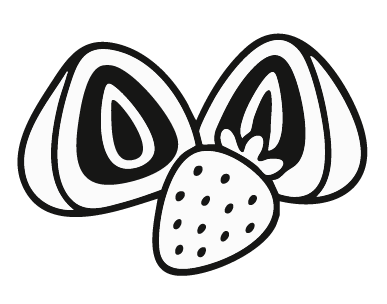

Press & MediaIn the Press
Nearly three decades of love letters from journalists, food writers, and hungry travelers from around the world.

Press & MediaNearly three decades of love letters from journalists, food writers, and hungry travelers from around the world.


From local news to national food media — Two Ladies Kitchen has been a story worth telling for nearly 30 years.


"A must-stop destination on the Big Island."
— Hawaiʻi Magazine
We welcome press inquiries, interview requests, and feature opportunities. Whether you're planning a piece on Hawaiian food culture, Big Island travel, or Japanese confectionery traditions — we'd love to connect.
Contact Us